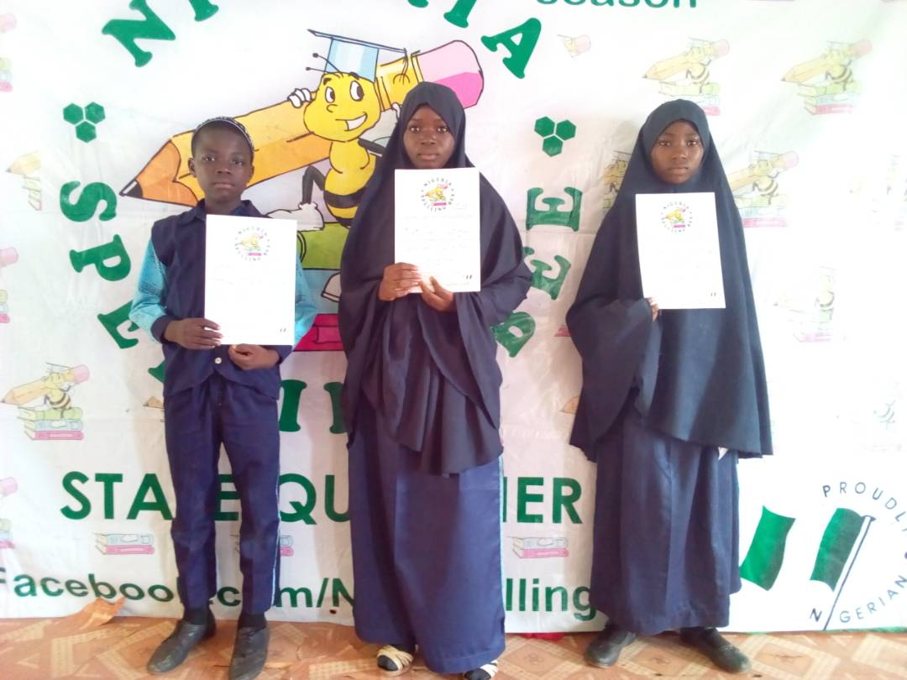
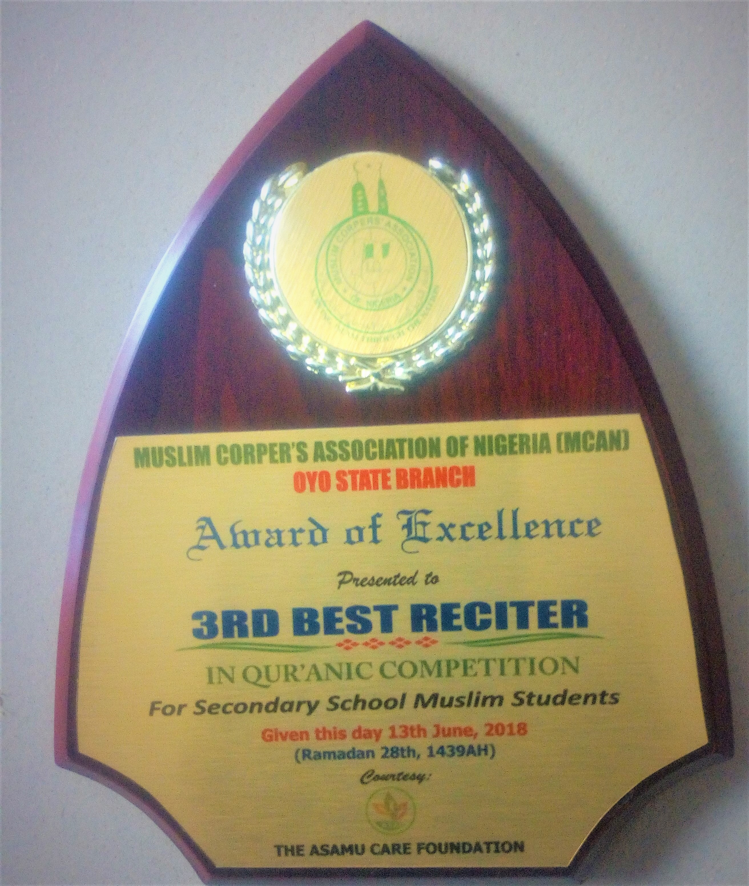

MHS FOURTH EXCURSION TO NIGERIAN TRIBUNE AND NATIONAL INLAND WATERWAYS AUTHORITY, LAGOS WAS INDEED A BIG CATCH!
 The fourth excursion of students and staff of Muflihun High School on Thursday 22nd February, 2018 to Nigerian Tribune Newspaper, Ibadan and National Inland Waterways Authority, Lagos will forever remain indelible in the memory of all the participants. The excursion which was the fourth of its kind since the establishment of the school in September, 2014 had ninety-six students and twelve staff members on board.
According to the school proprietor, this 2018 excursion is unique in many ways. It was broadcast through facebook live and whatsapp groups. Thousands of friends followed it online and commended the school management for such laudable academic exercise. He gave history of Muflihun excursions as thus:
The fourth excursion of students and staff of Muflihun High School on Thursday 22nd February, 2018 to Nigerian Tribune Newspaper, Ibadan and National Inland Waterways Authority, Lagos will forever remain indelible in the memory of all the participants. The excursion which was the fourth of its kind since the establishment of the school in September, 2014 had ninety-six students and twelve staff members on board.
According to the school proprietor, this 2018 excursion is unique in many ways. It was broadcast through facebook live and whatsapp groups. Thousands of friends followed it online and commended the school management for such laudable academic exercise. He gave history of Muflihun excursions as thus:
- First Excursion: IITA Moniya and Trans Amusement Park, Bodija, Ibadan on June 2, 2015.
- Second Excursion: National Archives of Nigeria, University of Ibadan on February 10, 2016.
- Third Excursion: Oluminrin Waterfall Erin-Ijesha, Osun State of Nigeria on February 9, 2017.
- Fourth Excursion: Nigerian Tribune Ibadan and National Inland Waterways Authority, Lagos on February 22, 2018.
The school vice principal administration, Mr Azeez Habeeb, made it known that students as well as staff learnt new things from both places of excursion. He concluded that those who did not partake in the excursion really missed a lot. While filling the students’ profile form, Miftahudeen Zainab A. (JSS3), Azeez Hikmat O. (JSS3), AbdulAzeez Fatihat O. (JSS3), AbdulHakeem Hafsah O. (SSS3) and Lukman Suliyat A. (SSS3) respectively picked the excursion to National Inland Waterways Authority as the most memorable event in their lives. In his final note, the school proprietor Ustadh Rasheed Haashim, thanked Allah for the success recorded on 2018 excursion. He then appreciated the parents, guardians, staff and other online well wishers for their immense contributions and prayers.
MUFLIHUN 1439 ANNUAL RAMADAN LECTURE: WHAT A RIGHTEOUS GATHERING
On Saturday 26th May, 2018 equivalent to 10th Ramadan 1439, Muflihun High School and its environs witnessed another mammoth crowd of listeners who attended 1439 Annual Ramadan Lecture of the school where that ebullient Islamic scholar Ustadh Ismail Adekunle Busayri extensively dealt with the topic: “Why are our prayers not answered?” لماذا ندعوا فلا يستجاب لنا؟ While delivering his soul inspiring and spiritually transforming lecture, Ustadh Busayri mentioned: association of partners with Allah, disbelief, sinful practices, hypocrisy, lack of sincerity, consumption of unlawful things, abandoning sunnah among others as obstacles to the acceptance of prayers. He then advised those present to shun sinful practices and flee unto Allah for Allah to quickly grant their wishes and accept their prayers. Another remarkable event that happened on the day was free distribution of special prayers on quick payment of debts. In his own remark, the school proprietor Ustadh Rasheed Haashim thanked Allah, commended the lecturer and appreciated those who attended 1439 edition of Muflihun Annual Ramadan Lecture. He gave history of MHS Annual Ramadan Lectures as follows:
- First Ramadan Lecture: It was held on Saturday June 27, 2015 by Shaykh Isa Akindele Solahudeen on the topic Child Upbringing in the Contemporary Society: Islamic Approach الأسلوب الإسلامي في تربية الأولاد في هذا العصر
- Second Ramadan Lecture: It was held on Saturday 18th June, 2016/13th Ramadan, 1437 by Dr Ismail Kolawole Yunus on the topic: “Children’s Deviation: Causes, Implications and Remedies” انحراف الأولاد: أسبابه، آثاره، وعلاجه
- Third Ramadan Lecture: It was held on Saturday 3rd June, 2017/8th Ramadan, 1438 by Ustadh Abdur-Rahman Muhammadul-Awwal on the topic: “Role of Parents and Islamic Schools in Children Upbringing and Societal Reformation” دور الوالدين والمدارس الإسلامية فى تربية الأولاد وإصلاح المجتمع
- Fourth Ramadan Lecture: It was held on Saturday 26th May, 2018/10th Ramadan, 1439 by Ustadh Ismail Busayri on the topic: Why are our prayers not answered? لماذا ندعوا فلا يستجاب لنا؟
He concluded his speech thanking all the lecturers as they have never disappointed the school. He then supplicated to Allah to reward everyone present enormously.
AWARDS COLLECTED BY MHS
MUFLIHUN COMES FIRST IN RAMADAN 1439 QUR'AN COMPETITION OF PURE HEART ISLAMIC FOUNDATION
A JSS2 student of Muflihun High School, Fadlullahi Nurudeen, came first in the junior category of 1439 Qur'an competition organized by Pure Heart Islamic Foundation of Nigeria, Oyo State Chapter. In a letter dated 18th May 2018, Muflihun High School was invited to participate in both junior and senior categories of the preliminary stage of the Qur'an competition held at Mufulanihun College of Education hall on Saturday 26th May, 2018. The two students who represented Muflihun in the preliminary stage excelled and so qualified for the final stage held on Sunday 3rd June, 2018 at Ansarud-deen Schools Eleyele, Ibadan. At the end of the exercise, Muflihun High School came first in the junior category. A specially designed award, a cooler and a gas cooker were all parted away with by Muflihun. Al-hamdulillah. Mr Aderemi Sulaiman who attended the event with the students appreciated the organizers on behalf of the school management. He supplicated to Allah to replenish their pocket and reward them in manifold.
MUFLIHUN EMERGES SECOND AND THIRD IN 2018 AMIS OLUYOLE ASSESSMENT EXAMINATION
On Saturday 24th February 2018, students of Muslim secondary schools in Oluyole converged at Darul-Hikmah Schools to write 2018 Annual Assessment Examination organized by Association of Model Islamic Schools (AMIS) Oluyole Local Government Chapter for her members’ schools. Twenty-seven (27) Muflihun students from JSS1-SSS3 classes participated in the event. As contained in the result sheet released by the assessment committee, a JSS2 Muflihun student Sawdah Ahmad came second among all JSS2 students examined while Fatihat Abdul-Azeez a JSS3 Muflihun student emerged third. Alhamdu Lillahi “This gladdens my heart and I pray for more of it in the nearest future” was the remark from the school proprietor, Ustadh Rasheed Haashim. He thanked Allah and then appreciated all the teachers for their relentless efforts as a tree can never make a forest. Amis Oluyole gave the two students gifts on Wednesday 6th June, 2018 during June monthly meeting at Al-Furqan College, Muslim Area, Ibadan.
FIVE JSS3 MUFLIHUN STUDENTS PARTICIPATE IN 2018 DEFI MATHEMATICS COMPETITION
In order to arouse the interest of MHS students in Mathematics, the school management registered five JSS3 students, two males and three females, for 2018 DEFI Mathematics Competition held at Conference Centre of Lead City University, Ibadan on Wednesday 28th February, 2018. Those students who represented the school tried their best in the competition as most of them scored above average despite being the first time the school would participate in such competition.
MUFLIHUN STUDENTS FEATURE IN 2018 COWBELLPEDIA MATHEMATICS COMPETITION!
 Ten Muflihun students, five from JSS3 and five others from SSS2 featured in 2018 edition of Cowbellpedia yearly Mathematics Competition held at Wesley College of Science, Elekuro Ibadan on Saturday 17th February, 2018.
The competition as contained on cowbell website will be in stages. Those who excel in the first stage will participate in the next stage and continue like that till winner emerges.
Ten Muflihun students, five from JSS3 and five others from SSS2 featured in 2018 edition of Cowbellpedia yearly Mathematics Competition held at Wesley College of Science, Elekuro Ibadan on Saturday 17th February, 2018.
The competition as contained on cowbell website will be in stages. Those who excel in the first stage will participate in the next stage and continue like that till winner emerges.
SPELLING BEE COMPETITION CERTIFICATE OF PARTICIPATION AWARDED TO THREE MUFLIHUN STUDENTS
 Three Muflihun students participated in 2018 spelling bee competition held on Friday 16th March, 2018 at Jesus the Rock Schools, Jegede, Ibadan. The programme which was very educative and interesting contributed immensely to the knowledge of the students who represented the school. At the end of the programme, certificate of participation was given to three Muflihun students who took part in the exercise.
JSS3 STUDENTS OF MUFLIHUN IN OYO STATE AMIS JOINT BECE MOCK
Thirteen Muflihun students participated in AMIS Oyo State Annual Joint Bece Mock at Stargate Schools, Sagari Boluwaji Area, Ibadan on Saturday 24th March, 2018. As contained in the timetable received from State Amis, students were examined on: Mathematics, English, Basic Science and Technology (comprising Basic Science, Basic Technology, Computer and Physical Health Education), Islamic Studies and National Values (comprising Social Studies, Civic Education and Security Education). At the end of marking and collation of results, a JSS3 Muflihun student Fatihat Abdul-Azeez emerged among the best fifty students across different centres in Oyo State. She is among those to be awarded during Amis State Children get-together at Liberty Stadium.
MUFLIHUN STUDENTS COME THIRD DURING MSSN DAY QUIZ OF MUSLIM GRAMMAR SCHOOL
Two Muflihun students Abdul-Azeez Ibrahim of SSS1 and Abdul-Wahid Abdul-Azeez of JSS1 represented Muflihun High School during 2018 MSSN Day programme of Muslim Grammar School, Odinjo Ibadan held in the school hall on Saturday 5th May, 2018. They partook in both Qur’an competition and quiz. At the end of the exercise, Muflihun came third in both programmes. Al-hamdu Lillahi Rabbil-Alamin. It should be noted that this was the first MSSN Day attended by the school since its inception in 2014. The school vice principal academic Mr Mutairu Adekola who received the gifts on behalf of the school management commended the efforts of those two boys. He expressed his joy over the performance. He supplicated to Allah to bless the knowledge of the students and continue elevating the status of the school.
MUFLIHUN STUDENTS AND A TEACHER RECEIVE CERTIFICATE OF PARTICIPATION IN 2018 ‘WHO WANTS TO BE AN ARCHITECT’ WORKSHOP
In a letter dated 30th April 2018, Muflihun High School was officially invited to participate in 2018 edition of ‘Who Wants to be an Architect’ workshop organized by Nigerian Institute of Architects, Oyo State Chapter. The workshop themed: “Architects of Tomorrow-Getting it Right from the Beginning” held at International Conference Centre, Lead City University, Ibadan on Saturday 26th May, 2018. Mr Ismail Afolabi who attended the workshop with the students commended the efforts of the organizers. Abdul-Malik Adigun, an SSS1 science student remarked that he greatly benefited from the workshop as it exposed him to what architecture is all about. At the end of the workshop, certificate of participation was given to all participants.
MUFLIHUN STUDENTS IN MAN MATHEMATICS COMPETITION
On Wednesday 23rd May 2018, three JSS3 and two SSS2 students of Muflihun High School participated in 2018 Mathematics Competition organized by Mathematics Association of Nigeria (MAN) Oyo State Chapter. The school being located at Oluyole Local Government participated in the Local government one at Methodist High School, Challenge Area, Ibadan. The students tried their best. We are optimistic that they will be among the winners in the subsequent ones was the remark of the school proprietor, Ustadh Rasheed Haashim.
MUFLIHUN RECEIVES AWARD OF HONOUR FROM LAGELU/SPLASH FM
In appreciation of her 2018 Ramadan Radio Da'wah sponsorship and highly beneficial lectures delivered, Muflihun High School on Sunday 10th June, 2018 has been given an Award of Honour by Lagelu/Splash FM during their 2018 Annual Ramadan lecture held at 4Real Events Centre Behind Forte Oil, Mobil, Ring Road, Ibadan. It should be noted that this is the fourth of its kind since the establishment of the school in 2014 but the school has never sponsored more than ten to fifteen days except this 2018 that the school sponsored the whole month of Ramadan. The school proprietor in an interview with the press club disclosed that that the feedback from the listeners shows that the program is heard within and outside Nigeria. Phone calls and text messages received from the audience especially during quiz questions were other testimonies that the programme gained wider acceptance among people. When he was asked about how the money was sourced for despite economic recession in the country, he replied that Allah deserves our thanks, then Muflihun parents and some generous individuals who trusted us and believed in our da’wah. He thereafter urged parents who have not been donating for the radio programme to always do so and emulate others. May Allah enrich the pockets of all the donors, he prayed.
MCAN OLUYOLE RAMADAN 1439 QUR'AN AND QUIZ COMPETITION: MUFLIHUN GETS A GIFT, ANOTHER AWARD AND A CASH OF #10,000
 Wednesday 13th June, 2018 was another day for ovation for Muflihun High School as the school for the second time in 1439 Ramadan got another award, gift and a cheque of #10,000 during MCAN Oyo State, Oluyole Chapter 1439 Annual Qur'an and Quiz Competition held at TSPC College, Ibadan. At the end of the competition, Muflihun came third in Qur'an competition and third as well in quiz competition. In appreciation of this feat, Muslim Corpers' Association of Nigeria (MCAN) Oluyole Chapter presented an award, a gift and a cheque of #10,000 to the school. It should be noted that this is the second time in 1439 Ramadan as a JSS2 Muflihun student Fadlullahi Nurudeen came first in the junior category of 1439 Qur'an competition organized by Pure Heart Islamic Foundation of Nigeria, Oyo State Chapter on Sunday 3rd June, 2018 at Ansarud-deen Schools Eleyele, Ibadan. The school proprietor expressed his joy over this award. He thanked Allah and then appreciated MCAN OLUYOLE executives. He congratulated them on actualization of 1439 competition. He concluded that with this 13th June award, Muflihun has got three different awards in 1439 Ramadan alone.
1439 FREE MEDICAL OUTREACH EXTENDED TO MUFLIHUN HIGH SCHOOL
1439 A.H annual Free Medical Outreach of As-Sakeenah Clinic and Maternity Centre, Odugade Odulana Road, Kajola Monatan, Ibadan was generously extended to Muflihun High School on Thursday 31st May, 2018. The said free medical outreach includes: health talk; blood pressure (BP) check up; retro viral screening (RVS) check up; temperature check up; treatment of minor ailment among others. Both Muflihun staff and students greatly benefitted from the free medical outreach. In his remarks, the school proprietor profoundly appreciated the team of As-Sakeenah Clinic. He supplicated to Allah to reward them with Firdaws and continue uplifting the status of the hospital.
A THREE DAY SPECIAL ORIENTATION PROGRAMME ORGANIZED FOR MHS OUTGOING SSS3 STUDENTS
A THREE DAY SPECIAL ORIENTATION PROGRAMME was organized for outgoing SSS3 Muflihun students between Monday 2nd July and 4th July, 2018. The programme, according to Mr Azeez Abeeb the school vice principal for administration, was designed to orientate them for future challenges. Day one which was tagged: SPIRITUAL DAY was handled by Ustadh Sulaiman Hamzah (Abu Ahmad) on the topic: ‘prohibitions taken too lightly by youths’ while day two which was tagged: CAREER DAY was handled by Malam Ishaq Abdul-Azeez the Founder and Director of Gifted and Talented Muslim (GTM) Educational Consult on the topic: ‘In choosing a carrier.’ Day three of the programme was tagged: campus life. The topic: ‘Campus life: What every prospective undergraduate should know’ was handled by Former Amir of Muslim Students’ Society of Nigeria (MSSN) University of Ibadan Malam Zakariya Giwa. The program was brought to an end with pieces of advice from the school proprietor. The programme was very exciting and inspiring.
Back to Top